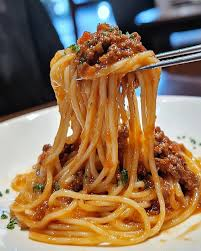

Home
Pasta Recipe

Description
Ingredients
- 8 ounces of pasta (spaghetti, penne, or your choice)
- 2 tablespoons olive oil
- 3 cloves garlic, minced
- 1 can (14.5 ounces) diced tomatoes
- 1 teaspoon dried basil
- Salt and pepper to taste
- Grated Parmesan cheese for serving
Instructions
- Cook the pasta according to package instructions. Drain and set aside.
- In a large skillet, heat olive oil over medium heat. Add minced garlic and sauté for 1-2 minutes until fragrant.
- Add the diced tomatoes (with their juice) and dried basil. Season with salt and pepper. Simmer for 5-7 minutes.
- Add the cooked pasta to the skillet and toss to combine, ensuring the pasta is well coated with the sauce.
- Serve hot, topped with grated Parmesan cheese.
- Enjoy your delicious pasta!